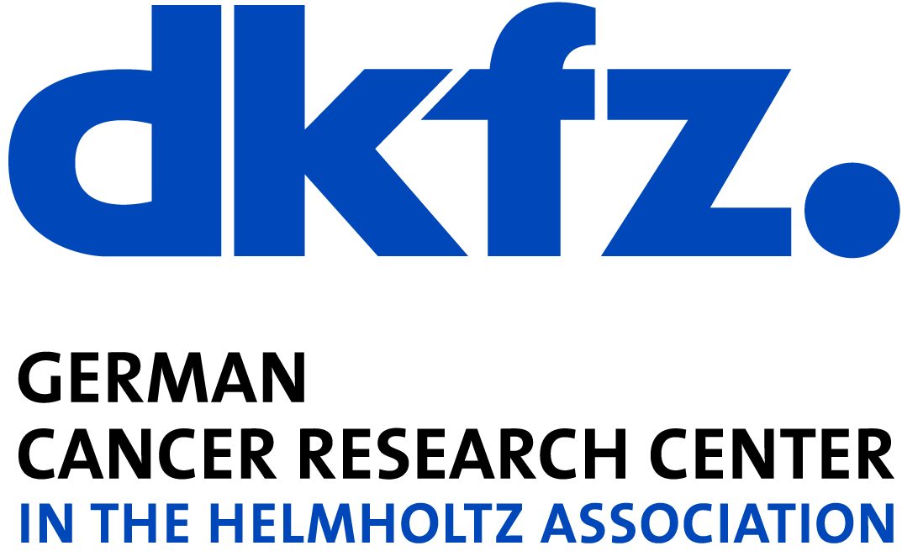
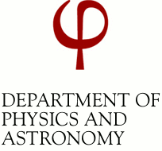

More than 20 research groups in Heidelberg work on ML - would you have guessed?
Heidelberg's research landscape in machine learning is uniquely diverse with many cutting-edge teams in natural science, life science and other disciplines. We are currently planning an event that will provide a stage for machine learning related research groups to present their research, challenges and future work with the idea of bringing these different worlds together. After an invited talk on machine learning, we will have short research pitches from a range of academic teams and close with a phase dedicated to debate and socializing. The event will take place on
For contributions please e-mail to Carsten Rother (network event head organizer).
Detailed schedule and keynote speaker to be announced soon!

